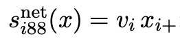

Data & Methods
Data
To answer the research questions, I created publication-networks
based on published articles by Dutch sociologists and political
scientists. These networks were produced using data obtained by J.
Slabbekoorn. Names of the used scholars were scraped from the websites
of the following universities: Radboud University, Erasumus university
Rotterdam, University of Amsterdam, Leiden University, Vrije
Universiteit, University of Utrecht, University of Tilburg and
University of Groningen. To ensure the data contains most
inter-university collaborations, data from all Dutch univerities was
used. Publication data was obtained by webscraping openAlex, an online
catalog storing publication data of all scholars. Publication network
evolution will be studied by analysing the networks in three waves. wave
one spans from 2015 through 2018, wave two spans from 2019 through 2023
and the final wave 3 spans from 2024 through 2025. All publications of
the selected scholars during these waves form the basis of nomination
networks. As our research questions are focused on first-author
collaboration choices, I created a directed adjacency matrix where the
first authors are ego’s and their co-authors are the nominated alters.
In the resulting matrix, a 1 represents a tie and depicts that the
scholar in the row has been the first author in a collaboration with the
scholar in the column.
Datacollection through webscraping does present some ethical concerns
as the data is obtained without informed consent. While all used data is
publicly available, wrangling the data for the purpose of this study
enhances the data in ways which might compromise the respondents’
privacy. In the present study, the gender and publication networks of
the scholars will be obtained, however no substantive data around their
research will be used. Therefore, our data only provides limited extra
information about the scholars, alleviating ethical concerns. All of the
data processing for this study is shown in this github repository for
full transparancy.
Dependent variable:
collaboration network
The aim of the present study is to understand preferences for inter
versus intra-university collaboration. This will be measured by adding
the ego level covariate university affiliation to the network data. The
dependent variable in the stochastic actor oriented model is the network
structure in wave two and three including inter and intra-university
ties. Before the RSiena analysis I will descriptively show the sums of
all intra- and inter-univerity ties in the three waves and the sum of
collaborations between all pairs of universities to get a feel for the
data.
independent
variables
intra-university
preference
The main independent variable in this study is the preference of
scholars to collaborate within universities rather than between
universities. For this variable, the latest available affiliations to
universities for all scholars have been used, some scholars are
affiliated with both Dutch and foreign universities, for these scholars,
the dutch universities are included in the data. While this might bias
their apparrent publication networks to be look much more
intra-university than they actually are, these scholars likely hold a
more senior status which means they are less likely to be first-authors.
They are important to include as their seniority also means that the
likelihood of other scientists collaborating with them is likely.
Scholars who are affiliated with multiple Dutch universities are removed
because the effect which will be used cannot handle multiple values for
one actor.
Preference for intra-university collaboration is captured by the
RSiena sameX effect. In each ministep in the stochastic oriented model
actors have a probability of making or breaking a tie based on whether
it will improve their sameX value which is determined by the formula
below. vi and vj represent ego-university and alter-university
respectively, I is an indicator function which is 1 when vi and vj are
the same and vi and vj are different. This is summed over all alters j
of a given actor to produce the sameX score. A positive score on this
variable in RSiena thus represents that a higher probability for
scholars to collaborate within universities than between universities
plays role in explaining the collaboration structures in following
waves.

Gender
To test my interaction hypothesis I have used genderdata for all
scholars generated by estimations based on first names. For 7 scholars
without a full first name in the data, I have added the genders
manually. In the RSiena models gender is included as the egoX(female)
effect. This effect assumes that being female increases an actors
tendency to make ties as opposed to being male. In the formula vi
represents whether the actor is female and Xi+ represents their
outdegree. Positive values mean that higher preference among female
scholars compared to male scholars to collaborate with new people plays
a role in explaining network structures in later waves. This variable
will be interacted with intra-university preference to show whether a
stronger preference to collaborate within universities among female
compared to male scholars can explain future network structures.

Control
variables
To reliably make reliable inferences about actor behaviour based on
the independent variables, all lower order effects also have to be
included in the analysis. As the network structure in the first wave is
likely already clustered by universities with many unclosed triads,
effects measuring triadic closure will also result in higher percentages
of intra-university collaborations. Similarly, als most ties in the
first wave are likely within universities, reciprocity will also
increase the relative amount of intra-university ties. In the strength
of weak ties hypothesis, Granovetter
(1973) posited that triadic closure would be much more likely in
networks with strong ties because open triads with strong ties produce
emotional strain. By controlling for reciprocity and triadic closure,
the preference for intra-university ties variable will only measure this
preference for triadic closure within university networks therefore more
closely resembling the theoretical mechanism. Furthermore
Furthermore, function level is included as a control variable. This
is necesary as there are likely gender differences in function levels
within universities and function levels play a large role in who forms
ties as first author and who will receive ties. Therefore, function
levels could confound gender effects in this study. For function level I
will use the main covariate effects egoX, altX and sameX to measure
respectively: activity related to the function level of the ego,
activity related to the function level of the alter and homophily in
function level. The altX and sameX effects will also be added as control
variables for Gender.
To improve the goodness of fit I iterated with other effects that
make theoretical sense to add as control variables. As a result I added
three effects, firstly inPop to acount for nodes that already have a
high indegree to receive even more incoming ties. Secondly outAct to
account for the effect that the higher the outdegree someone has, the
higher their likelihood to increase their outdegree. Lastly, isolateNet
where positive values indicate that complete isolates have a higher
chance of remaining isolates and non isolates are likely to become
isolates.
Analytical
strategy
In order to answer my research questions and test my hypotheses, my
analysis consists of two steps. I first show some descriptive analyses
in all three waves to get a feel for the data and answer the first two
research questions. I then use stochastic actor oriented modeling using
the RSiena package (Snijders et al. 2024)
to answer the third and fourth research questions and test the
corresponding hypotheses.
Hypotheses one is tested by calculating the sum of intra-university
and inter-university ties in all three waves. Hypothesis two is tested
by counting the sum of intra-university and inter-univerity ties split
by the gender of the tie sender. To add context to these results,
figures depicting the networks by university and gender are included. To
get a better idea of the network characteristics I also show some
network characteristics like diad census triad census and transitivity.
Transitivity is particularly relevant as the preference for
intra-university collaboration theoretically likely manifests itself in
transitive closure within university networks. Furthermore, I show how
much collaboration occurs between all pairs of universities to
understand whether there are specific dyads of universities which show
different patterns from the rest.
For hypotheses three and four, I estimate stochastic actor oriented
models using RSiena. This software assumes actors make ministeps which
consist of breaking a tie or creating a tie. The probability that any
actor will make or break a tie is based on the network effects created
in the model. To understand which effects are relevant in predicting
later waves of a network, RSiena simulates networks with different
probabilities awarded to each effect until it reaches a solution where
the preferences of actors reflect the final network. to test hypotheses
three and four, I estimate four RSiena models. Model 1 contains the
default outdegree and reciprocity effects and the sameX(university)
effect. Model 2 contains the sameX(university) effect, GWESPFf and the
covariate effects egoX, altX and sameX for both funciton level and
gender. Model 4 is used to test hypothesis 3 and includes sameX
university and all control variables. in Model 4, the interaction
between egoX(gender) and sameX(university) is added on top of all other
effects. Model 4 will be used to test hypotheses 4. As a robustness
check the Radboud University and University of Utrecht will be combined
and used as a new university variable to test possible outsized
influence of this pairing. For this robusntess check, model 1, 3 and 4
will be rerun with the new university variable.
Granovetter, Mark S. 1973.
“The Strength of Weak Ties.”
American Journal of Sociology 78 (6): 1360–80.
https://doi.org/10.1086/225469.
Snijders, Tom A. B., Ruth M. Ripley, Krists Boitmanis, Christian
Steglich, Nynke M. D. Niezink, Viviana Amati, and Felix Schoenenberger.
2024.
“Siena - Simulation Investigation for Empirical Network
Analysis.” https://www.stats.ox.ac.uk/~snijders/siena/.
LS0tCnRpdGxlOiAiRGF0YSAmIE1ldGhvZHMiCiNiaWJsaW9ncmFwaHk6IHJlZmVyZW5jZXMuYmliCmF1dGhvcjogIkJyYW0gS29ld2VpZGVuIgpiaWJsaW9ncmFwaHk6IHJlZmVyZW5jZXMuYmliCi0tLQoKIyBEYXRhICYgTWV0aG9kcwoKIyMgRGF0YQoKVG8gYW5zd2VyIHRoZSByZXNlYXJjaCBxdWVzdGlvbnMsIEkgY3JlYXRlZCBwdWJsaWNhdGlvbi1uZXR3b3JrcyBiYXNlZCBvbiBwdWJsaXNoZWQgYXJ0aWNsZXMgYnkgRHV0Y2ggc29jaW9sb2dpc3RzIGFuZCBwb2xpdGljYWwgc2NpZW50aXN0cy4gVGhlc2UgbmV0d29ya3Mgd2VyZSBwcm9kdWNlZCB1c2luZyBkYXRhIG9idGFpbmVkIGJ5IEouIFNsYWJiZWtvb3JuLiBOYW1lcyBvZiB0aGUgdXNlZCBzY2hvbGFycyB3ZXJlIHNjcmFwZWQgZnJvbSB0aGUgd2Vic2l0ZXMgb2YgdGhlIGZvbGxvd2luZyB1bml2ZXJzaXRpZXM6IFJhZGJvdWQgVW5pdmVyc2l0eSwgRXJhc3VtdXMgdW5pdmVyc2l0eSBSb3R0ZXJkYW0sIFVuaXZlcnNpdHkgb2YgQW1zdGVyZGFtLCBMZWlkZW4gVW5pdmVyc2l0eSwgVnJpamUgVW5pdmVyc2l0ZWl0LCBVbml2ZXJzaXR5IG9mIFV0cmVjaHQsIFVuaXZlcnNpdHkgb2YgVGlsYnVyZyBhbmQgVW5pdmVyc2l0eSBvZiBHcm9uaW5nZW4uIFRvIGVuc3VyZSB0aGUgZGF0YSBjb250YWlucyBtb3N0IGludGVyLXVuaXZlcnNpdHkgY29sbGFib3JhdGlvbnMsIGRhdGEgZnJvbSBhbGwgRHV0Y2ggdW5pdmVyaXRpZXMgd2FzIHVzZWQuIFB1YmxpY2F0aW9uIGRhdGEgd2FzIG9idGFpbmVkIGJ5IHdlYnNjcmFwaW5nIG9wZW5BbGV4LCBhbiBvbmxpbmUgY2F0YWxvZyBzdG9yaW5nIHB1YmxpY2F0aW9uIGRhdGEgb2YgYWxsIHNjaG9sYXJzLiBQdWJsaWNhdGlvbiBuZXR3b3JrIGV2b2x1dGlvbiB3aWxsIGJlIHN0dWRpZWQgYnkgYW5hbHlzaW5nIHRoZSBuZXR3b3JrcyBpbiB0aHJlZSB3YXZlcy4gd2F2ZSBvbmUgc3BhbnMgZnJvbSAyMDE1IHRocm91Z2ggMjAxOCwgd2F2ZSB0d28gc3BhbnMgZnJvbSAyMDE5IHRocm91Z2ggMjAyMyBhbmQgdGhlIGZpbmFsIHdhdmUgMyBzcGFucyBmcm9tIDIwMjQgdGhyb3VnaCAyMDI1LiBBbGwgcHVibGljYXRpb25zIG9mIHRoZSBzZWxlY3RlZCBzY2hvbGFycyBkdXJpbmcgdGhlc2Ugd2F2ZXMgZm9ybSB0aGUgYmFzaXMgb2Ygbm9taW5hdGlvbiBuZXR3b3Jrcy4gQXMgb3VyIHJlc2VhcmNoIHF1ZXN0aW9ucyBhcmUgZm9jdXNlZCBvbiBmaXJzdC1hdXRob3IgY29sbGFib3JhdGlvbiBjaG9pY2VzLCBJIGNyZWF0ZWQgYSBkaXJlY3RlZCBhZGphY2VuY3kgbWF0cml4IHdoZXJlIHRoZSBmaXJzdCBhdXRob3JzIGFyZSBlZ28ncyBhbmQgdGhlaXIgY28tYXV0aG9ycyBhcmUgdGhlIG5vbWluYXRlZCBhbHRlcnMuIEluIHRoZSByZXN1bHRpbmcgbWF0cml4LCBhIDEgcmVwcmVzZW50cyBhIHRpZSBhbmQgZGVwaWN0cyB0aGF0IHRoZSBzY2hvbGFyIGluIHRoZSByb3cgaGFzIGJlZW4gdGhlIGZpcnN0IGF1dGhvciBpbiBhIGNvbGxhYm9yYXRpb24gd2l0aCB0aGUgc2Nob2xhciBpbiB0aGUgY29sdW1uLgoKRGF0YWNvbGxlY3Rpb24gdGhyb3VnaCB3ZWJzY3JhcGluZyBkb2VzIHByZXNlbnQgc29tZSBldGhpY2FsIGNvbmNlcm5zIGFzIHRoZSBkYXRhIGlzIG9idGFpbmVkIHdpdGhvdXQgaW5mb3JtZWQgY29uc2VudC4gV2hpbGUgYWxsIHVzZWQgZGF0YSBpcyBwdWJsaWNseSBhdmFpbGFibGUsIHdyYW5nbGluZyB0aGUgZGF0YSBmb3IgdGhlIHB1cnBvc2Ugb2YgdGhpcyBzdHVkeSBlbmhhbmNlcyB0aGUgZGF0YSBpbiB3YXlzIHdoaWNoIG1pZ2h0IGNvbXByb21pc2UgdGhlIHJlc3BvbmRlbnRzJyBwcml2YWN5LiBJbiB0aGUgcHJlc2VudCBzdHVkeSwgdGhlIGdlbmRlciBhbmQgcHVibGljYXRpb24gbmV0d29ya3Mgb2YgdGhlIHNjaG9sYXJzIHdpbGwgYmUgb2J0YWluZWQsIGhvd2V2ZXIgbm8gc3Vic3RhbnRpdmUgZGF0YSBhcm91bmQgdGhlaXIgcmVzZWFyY2ggd2lsbCBiZSB1c2VkLiBUaGVyZWZvcmUsIG91ciBkYXRhIG9ubHkgcHJvdmlkZXMgbGltaXRlZCBleHRyYSBpbmZvcm1hdGlvbiBhYm91dCB0aGUgc2Nob2xhcnMsIGFsbGV2aWF0aW5nIGV0aGljYWwgY29uY2VybnMuIEFsbCBvZiB0aGUgZGF0YSBwcm9jZXNzaW5nIGZvciB0aGlzIHN0dWR5IGlzIHNob3duIGluIHRoaXMgZ2l0aHViIHJlcG9zaXRvcnkgZm9yIGZ1bGwgdHJhbnNwYXJhbmN5LgoKIyMgRGVwZW5kZW50IHZhcmlhYmxlOiBjb2xsYWJvcmF0aW9uIG5ldHdvcmsKClRoZSBhaW0gb2YgdGhlIHByZXNlbnQgc3R1ZHkgaXMgdG8gdW5kZXJzdGFuZCBwcmVmZXJlbmNlcyBmb3IgaW50ZXIgdmVyc3VzIGludHJhLXVuaXZlcnNpdHkgY29sbGFib3JhdGlvbi4gVGhpcyB3aWxsIGJlIG1lYXN1cmVkIGJ5IGFkZGluZyB0aGUgZWdvIGxldmVsIGNvdmFyaWF0ZSB1bml2ZXJzaXR5IGFmZmlsaWF0aW9uIHRvIHRoZSBuZXR3b3JrIGRhdGEuIFRoZSBkZXBlbmRlbnQgdmFyaWFibGUgaW4gdGhlIHN0b2NoYXN0aWMgYWN0b3Igb3JpZW50ZWQgbW9kZWwgaXMgdGhlIG5ldHdvcmsgc3RydWN0dXJlIGluIHdhdmUgdHdvIGFuZCB0aHJlZSBpbmNsdWRpbmcgaW50ZXIgYW5kIGludHJhLXVuaXZlcnNpdHkgdGllcy4gQmVmb3JlIHRoZSBSU2llbmEgYW5hbHlzaXMgSSB3aWxsIGRlc2NyaXB0aXZlbHkgc2hvdyB0aGUgc3VtcyBvZiBhbGwgaW50cmEtIGFuZCBpbnRlci11bml2ZXJpdHkgdGllcyBpbiB0aGUgdGhyZWUgd2F2ZXMgYW5kIHRoZSBzdW0gb2YgY29sbGFib3JhdGlvbnMgYmV0d2VlbiBhbGwgcGFpcnMgb2YgdW5pdmVyc2l0aWVzIHRvIGdldCBhIGZlZWwgZm9yIHRoZSBkYXRhLgoKIyMgaW5kZXBlbmRlbnQgdmFyaWFibGVzCgojIyMgaW50cmEtdW5pdmVyc2l0eSBwcmVmZXJlbmNlCgpUaGUgbWFpbiBpbmRlcGVuZGVudCB2YXJpYWJsZSBpbiB0aGlzIHN0dWR5IGlzIHRoZSBwcmVmZXJlbmNlIG9mIHNjaG9sYXJzIHRvIGNvbGxhYm9yYXRlIHdpdGhpbiB1bml2ZXJzaXRpZXMgcmF0aGVyIHRoYW4gYmV0d2VlbiB1bml2ZXJzaXRpZXMuIEZvciB0aGlzIHZhcmlhYmxlLCB0aGUgbGF0ZXN0IGF2YWlsYWJsZSBhZmZpbGlhdGlvbnMgdG8gdW5pdmVyc2l0aWVzIGZvciBhbGwgc2Nob2xhcnMgaGF2ZSBiZWVuIHVzZWQsIHNvbWUgc2Nob2xhcnMgYXJlIGFmZmlsaWF0ZWQgd2l0aCBib3RoIER1dGNoIGFuZCBmb3JlaWduIHVuaXZlcnNpdGllcywgZm9yIHRoZXNlIHNjaG9sYXJzLCB0aGUgZHV0Y2ggdW5pdmVyc2l0aWVzIGFyZSBpbmNsdWRlZCBpbiB0aGUgZGF0YS4gV2hpbGUgdGhpcyBtaWdodCBiaWFzIHRoZWlyIGFwcGFycmVudCBwdWJsaWNhdGlvbiBuZXR3b3JrcyB0byBiZSBsb29rIG11Y2ggbW9yZSBpbnRyYS11bml2ZXJzaXR5IHRoYW4gdGhleSBhY3R1YWxseSBhcmUsIHRoZXNlIHNjaG9sYXJzIGxpa2VseSBob2xkIGEgbW9yZSBzZW5pb3Igc3RhdHVzIHdoaWNoIG1lYW5zIHRoZXkgYXJlIGxlc3MgbGlrZWx5IHRvIGJlIGZpcnN0LWF1dGhvcnMuIFRoZXkgYXJlIGltcG9ydGFudCB0byBpbmNsdWRlIGFzIHRoZWlyIHNlbmlvcml0eSBhbHNvIG1lYW5zIHRoYXQgdGhlIGxpa2VsaWhvb2Qgb2Ygb3RoZXIgc2NpZW50aXN0cyBjb2xsYWJvcmF0aW5nIHdpdGggdGhlbSBpcyBsaWtlbHkuIFNjaG9sYXJzIHdobyBhcmUgYWZmaWxpYXRlZCB3aXRoIG11bHRpcGxlIER1dGNoIHVuaXZlcnNpdGllcyBhcmUgcmVtb3ZlZCBiZWNhdXNlIHRoZSBlZmZlY3Qgd2hpY2ggd2lsbCBiZSB1c2VkIGNhbm5vdCBoYW5kbGUgbXVsdGlwbGUgdmFsdWVzIGZvciBvbmUgYWN0b3IuCgpQcmVmZXJlbmNlIGZvciBpbnRyYS11bml2ZXJzaXR5IGNvbGxhYm9yYXRpb24gaXMgY2FwdHVyZWQgYnkgdGhlIFJTaWVuYSBzYW1lWCBlZmZlY3QuIEluIGVhY2ggbWluaXN0ZXAgaW4gdGhlIHN0b2NoYXN0aWMgb3JpZW50ZWQgbW9kZWwgYWN0b3JzIGhhdmUgYSBwcm9iYWJpbGl0eSBvZiBtYWtpbmcgb3IgYnJlYWtpbmcgYSB0aWUgYmFzZWQgb24gd2hldGhlciBpdCB3aWxsIGltcHJvdmUgdGhlaXIgc2FtZVggdmFsdWUgd2hpY2ggaXMgZGV0ZXJtaW5lZCBieSB0aGUgZm9ybXVsYSBiZWxvdy4gdmkgYW5kIHZqIHJlcHJlc2VudCBlZ28tdW5pdmVyc2l0eSBhbmQgYWx0ZXItdW5pdmVyc2l0eSByZXNwZWN0aXZlbHksIEkgaXMgYW4gaW5kaWNhdG9yIGZ1bmN0aW9uIHdoaWNoIGlzIDEgd2hlbiB2aSBhbmQgdmogYXJlIHRoZSBzYW1lIGFuZCB2aSBhbmQgdmogYXJlIGRpZmZlcmVudC4gVGhpcyBpcyBzdW1tZWQgb3ZlciBhbGwgYWx0ZXJzIGogb2YgYSBnaXZlbiBhY3RvciB0byBwcm9kdWNlIHRoZSBzYW1lWCBzY29yZS4gQSBwb3NpdGl2ZSBzY29yZSBvbiB0aGlzIHZhcmlhYmxlIGluIFJTaWVuYSB0aHVzIHJlcHJlc2VudHMgdGhhdCBhIGhpZ2hlciBwcm9iYWJpbGl0eSBmb3Igc2Nob2xhcnMgdG8gY29sbGFib3JhdGUgd2l0aGluIHVuaXZlcnNpdGllcyB0aGFuIGJldHdlZW4gdW5pdmVyc2l0aWVzIHBsYXlzIHJvbGUgaW4gZXhwbGFpbmluZyB0aGUgY29sbGFib3JhdGlvbiBzdHJ1Y3R1cmVzIGluIGZvbGxvd2luZyB3YXZlcy4KCiFbXShpbWFnZXMvY2xpcGJvYXJkLTQ2OTUyMDgxNi5wbmcpe3dpZHRoPSIxNzkifQoKIyMjIEdlbmRlcgoKVG8gdGVzdCBteSBpbnRlcmFjdGlvbiBoeXBvdGhlc2lzIEkgaGF2ZSB1c2VkIGdlbmRlcmRhdGEgZm9yIGFsbCBzY2hvbGFycyBnZW5lcmF0ZWQgYnkgZXN0aW1hdGlvbnMgYmFzZWQgb24gZmlyc3QgbmFtZXMuIEZvciA3IHNjaG9sYXJzIHdpdGhvdXQgYSBmdWxsIGZpcnN0IG5hbWUgaW4gdGhlIGRhdGEsIEkgaGF2ZSBhZGRlZCB0aGUgZ2VuZGVycyBtYW51YWxseS4gSW4gdGhlIFJTaWVuYSBtb2RlbHMgZ2VuZGVyIGlzIGluY2x1ZGVkIGFzIHRoZSBlZ29YKGZlbWFsZSkgZWZmZWN0LiBUaGlzIGVmZmVjdCBhc3N1bWVzIHRoYXQgYmVpbmcgZmVtYWxlIGluY3JlYXNlcyBhbiBhY3RvcnMgdGVuZGVuY3kgdG8gbWFrZSB0aWVzIGFzIG9wcG9zZWQgdG8gYmVpbmcgbWFsZS4gSW4gdGhlIGZvcm11bGEgdmkgcmVwcmVzZW50cyB3aGV0aGVyIHRoZSBhY3RvciBpcyBmZW1hbGUgYW5kIFhpKyByZXByZXNlbnRzIHRoZWlyIG91dGRlZ3JlZS4gUG9zaXRpdmUgdmFsdWVzIG1lYW4gdGhhdCBoaWdoZXIgcHJlZmVyZW5jZSBhbW9uZyBmZW1hbGUgc2Nob2xhcnMgY29tcGFyZWQgdG8gbWFsZSBzY2hvbGFycyB0byBjb2xsYWJvcmF0ZSB3aXRoIG5ldyBwZW9wbGUgcGxheXMgYSByb2xlIGluIGV4cGxhaW5pbmcgbmV0d29yayBzdHJ1Y3R1cmVzIGluIGxhdGVyIHdhdmVzLiBUaGlzIHZhcmlhYmxlIHdpbGwgYmUgaW50ZXJhY3RlZCB3aXRoIGludHJhLXVuaXZlcnNpdHkgcHJlZmVyZW5jZSB0byBzaG93IHdoZXRoZXIgYSBzdHJvbmdlciBwcmVmZXJlbmNlIHRvIGNvbGxhYm9yYXRlIHdpdGhpbiB1bml2ZXJzaXRpZXMgYW1vbmcgZmVtYWxlIGNvbXBhcmVkIHRvIG1hbGUgc2Nob2xhcnMgY2FuIGV4cGxhaW4gZnV0dXJlIG5ldHdvcmsgc3RydWN0dXJlcy4KCiFbXShpbWFnZXMvY2xpcGJvYXJkLTQxNzMwNjM2MTQucG5nKXt3aWR0aD0iMTE0In0KCiMjIENvbnRyb2wgdmFyaWFibGVzIAoKVG8gcmVsaWFibHkgbWFrZSByZWxpYWJsZSBpbmZlcmVuY2VzIGFib3V0IGFjdG9yIGJlaGF2aW91ciBiYXNlZCBvbiB0aGUgaW5kZXBlbmRlbnQgdmFyaWFibGVzLCBhbGwgbG93ZXIgb3JkZXIgZWZmZWN0cyBhbHNvIGhhdmUgdG8gYmUgaW5jbHVkZWQgaW4gdGhlIGFuYWx5c2lzLiBBcyB0aGUgbmV0d29yayBzdHJ1Y3R1cmUgaW4gdGhlIGZpcnN0IHdhdmUgaXMgbGlrZWx5IGFscmVhZHkgY2x1c3RlcmVkIGJ5IHVuaXZlcnNpdGllcyB3aXRoIG1hbnkgdW5jbG9zZWQgdHJpYWRzLCBlZmZlY3RzIG1lYXN1cmluZyB0cmlhZGljIGNsb3N1cmUgd2lsbCBhbHNvIHJlc3VsdCBpbiBoaWdoZXIgcGVyY2VudGFnZXMgb2YgaW50cmEtdW5pdmVyc2l0eSBjb2xsYWJvcmF0aW9ucy4gU2ltaWxhcmx5LCBhbHMgbW9zdCB0aWVzIGluIHRoZSBmaXJzdCB3YXZlIGFyZSBsaWtlbHkgd2l0aGluIHVuaXZlcnNpdGllcywgcmVjaXByb2NpdHkgd2lsbCBhbHNvIGluY3JlYXNlIHRoZSByZWxhdGl2ZSBhbW91bnQgb2YgaW50cmEtdW5pdmVyc2l0eSB0aWVzLiBJbiB0aGUgc3RyZW5ndGggb2Ygd2VhayB0aWVzIGh5cG90aGVzaXMsIEBncmFub3ZldHRlcjE5NzMgcG9zaXRlZCB0aGF0IHRyaWFkaWMgY2xvc3VyZSB3b3VsZCBiZSBtdWNoIG1vcmUgbGlrZWx5IGluIG5ldHdvcmtzIHdpdGggc3Ryb25nIHRpZXMgYmVjYXVzZSBvcGVuIHRyaWFkcyB3aXRoIHN0cm9uZyB0aWVzIHByb2R1Y2UgZW1vdGlvbmFsIHN0cmFpbi4gQnkgY29udHJvbGxpbmcgZm9yIHJlY2lwcm9jaXR5IGFuZCB0cmlhZGljIGNsb3N1cmUsIHRoZSBwcmVmZXJlbmNlIGZvciBpbnRyYS11bml2ZXJzaXR5IHRpZXMgdmFyaWFibGUgd2lsbCBvbmx5IG1lYXN1cmUgdGhpcyBwcmVmZXJlbmNlIGZvciB0cmlhZGljIGNsb3N1cmUgd2l0aGluIHVuaXZlcnNpdHkgbmV0d29ya3MgdGhlcmVmb3JlIG1vcmUgY2xvc2VseSByZXNlbWJsaW5nIHRoZSB0aGVvcmV0aWNhbCBtZWNoYW5pc20uIEZ1cnRoZXJtb3JlCgpGdXJ0aGVybW9yZSwgZnVuY3Rpb24gbGV2ZWwgaXMgaW5jbHVkZWQgYXMgYSBjb250cm9sIHZhcmlhYmxlLiBUaGlzIGlzIG5lY2VzYXJ5IGFzIHRoZXJlIGFyZSBsaWtlbHkgZ2VuZGVyIGRpZmZlcmVuY2VzIGluIGZ1bmN0aW9uIGxldmVscyB3aXRoaW4gdW5pdmVyc2l0aWVzIGFuZCBmdW5jdGlvbiBsZXZlbHMgcGxheSBhIGxhcmdlIHJvbGUgaW4gd2hvIGZvcm1zIHRpZXMgYXMgZmlyc3QgYXV0aG9yIGFuZCB3aG8gd2lsbCByZWNlaXZlIHRpZXMuIFRoZXJlZm9yZSwgZnVuY3Rpb24gbGV2ZWxzIGNvdWxkIGNvbmZvdW5kIGdlbmRlciBlZmZlY3RzIGluIHRoaXMgc3R1ZHkuIEZvciBmdW5jdGlvbiBsZXZlbCBJIHdpbGwgdXNlIHRoZSBtYWluIGNvdmFyaWF0ZSBlZmZlY3RzIGVnb1gsIGFsdFggYW5kIHNhbWVYIHRvIG1lYXN1cmUgcmVzcGVjdGl2ZWx5OiBhY3Rpdml0eSByZWxhdGVkIHRvIHRoZSBmdW5jdGlvbiBsZXZlbCBvZiB0aGUgZWdvLCBhY3Rpdml0eSByZWxhdGVkIHRvIHRoZSBmdW5jdGlvbiBsZXZlbCBvZiB0aGUgYWx0ZXIgYW5kIGhvbW9waGlseSBpbiBmdW5jdGlvbiBsZXZlbC4gVGhlIGFsdFggYW5kIHNhbWVYIGVmZmVjdHMgd2lsbCBhbHNvIGJlIGFkZGVkIGFzIGNvbnRyb2wgdmFyaWFibGVzIGZvciBHZW5kZXIuCgpUbyBpbXByb3ZlIHRoZSBnb29kbmVzcyBvZiBmaXQgSSBpdGVyYXRlZCB3aXRoIG90aGVyIGVmZmVjdHMgdGhhdCBtYWtlIHRoZW9yZXRpY2FsIHNlbnNlIHRvIGFkZCBhcyBjb250cm9sIHZhcmlhYmxlcy4gQXMgYSByZXN1bHQgSSBhZGRlZCB0aHJlZSBlZmZlY3RzLCBmaXJzdGx5IGluUG9wIHRvIGFjb3VudCBmb3Igbm9kZXMgdGhhdCBhbHJlYWR5IGhhdmUgYSBoaWdoIGluZGVncmVlIHRvIHJlY2VpdmUgZXZlbiBtb3JlIGluY29taW5nIHRpZXMuIFNlY29uZGx5IG91dEFjdCB0byBhY2NvdW50IGZvciB0aGUgZWZmZWN0IHRoYXQgdGhlIGhpZ2hlciB0aGUgb3V0ZGVncmVlIHNvbWVvbmUgaGFzLCB0aGUgaGlnaGVyIHRoZWlyIGxpa2VsaWhvb2QgdG8gaW5jcmVhc2UgdGhlaXIgb3V0ZGVncmVlLiBMYXN0bHksIGlzb2xhdGVOZXQgd2hlcmUgcG9zaXRpdmUgdmFsdWVzIGluZGljYXRlIHRoYXQgY29tcGxldGUgaXNvbGF0ZXMgaGF2ZSBhIGhpZ2hlciBjaGFuY2Ugb2YgcmVtYWluaW5nIGlzb2xhdGVzIGFuZCBub24gaXNvbGF0ZXMgYXJlIGxpa2VseSB0byBiZWNvbWUgaXNvbGF0ZXMuCgojIyBBbmFseXRpY2FsIHN0cmF0ZWd5CgpJbiBvcmRlciB0byBhbnN3ZXIgbXkgcmVzZWFyY2ggcXVlc3Rpb25zIGFuZCB0ZXN0IG15IGh5cG90aGVzZXMsIG15IGFuYWx5c2lzIGNvbnNpc3RzIG9mIHR3byBzdGVwcy4gSSBmaXJzdCBzaG93IHNvbWUgZGVzY3JpcHRpdmUgYW5hbHlzZXMgaW4gYWxsIHRocmVlIHdhdmVzIHRvIGdldCBhIGZlZWwgZm9yIHRoZSBkYXRhIGFuZCBhbnN3ZXIgdGhlIGZpcnN0IHR3byByZXNlYXJjaCBxdWVzdGlvbnMuIEkgdGhlbiB1c2Ugc3RvY2hhc3RpYyBhY3RvciBvcmllbnRlZCBtb2RlbGluZyB1c2luZyB0aGUgUlNpZW5hIHBhY2thZ2UgW0BSU2llbmFdIHRvIGFuc3dlciB0aGUgdGhpcmQgYW5kIGZvdXJ0aCByZXNlYXJjaCBxdWVzdGlvbnMgYW5kIHRlc3QgdGhlIGNvcnJlc3BvbmRpbmcgaHlwb3RoZXNlcy4KCkh5cG90aGVzZXMgb25lIGlzIHRlc3RlZCBieSBjYWxjdWxhdGluZyB0aGUgc3VtIG9mIGludHJhLXVuaXZlcnNpdHkgYW5kIGludGVyLXVuaXZlcnNpdHkgdGllcyBpbiBhbGwgdGhyZWUgd2F2ZXMuIEh5cG90aGVzaXMgdHdvIGlzIHRlc3RlZCBieSBjb3VudGluZyB0aGUgc3VtIG9mIGludHJhLXVuaXZlcnNpdHkgYW5kIGludGVyLXVuaXZlcml0eSB0aWVzIHNwbGl0IGJ5IHRoZSBnZW5kZXIgb2YgdGhlIHRpZSBzZW5kZXIuIFRvIGFkZCBjb250ZXh0IHRvIHRoZXNlIHJlc3VsdHMsIGZpZ3VyZXMgZGVwaWN0aW5nIHRoZSBuZXR3b3JrcyBieSB1bml2ZXJzaXR5IGFuZCBnZW5kZXIgYXJlIGluY2x1ZGVkLiBUbyBnZXQgYSBiZXR0ZXIgaWRlYSBvZiB0aGUgbmV0d29yayBjaGFyYWN0ZXJpc3RpY3MgSSBhbHNvIHNob3cgc29tZSBuZXR3b3JrIGNoYXJhY3RlcmlzdGljcyBsaWtlIGRpYWQgY2Vuc3VzIHRyaWFkIGNlbnN1cyBhbmQgdHJhbnNpdGl2aXR5LiBUcmFuc2l0aXZpdHkgaXMgcGFydGljdWxhcmx5IHJlbGV2YW50IGFzIHRoZSBwcmVmZXJlbmNlIGZvciBpbnRyYS11bml2ZXJzaXR5IGNvbGxhYm9yYXRpb24gdGhlb3JldGljYWxseSBsaWtlbHkgbWFuaWZlc3RzIGl0c2VsZiBpbiB0cmFuc2l0aXZlIGNsb3N1cmUgd2l0aGluIHVuaXZlcnNpdHkgbmV0d29ya3MuIEZ1cnRoZXJtb3JlLCBJIHNob3cgaG93IG11Y2ggY29sbGFib3JhdGlvbiBvY2N1cnMgYmV0d2VlbiBhbGwgcGFpcnMgb2YgdW5pdmVyc2l0aWVzIHRvIHVuZGVyc3RhbmQgd2hldGhlciB0aGVyZSBhcmUgc3BlY2lmaWMgZHlhZHMgb2YgdW5pdmVyc2l0aWVzIHdoaWNoIHNob3cgZGlmZmVyZW50IHBhdHRlcm5zIGZyb20gdGhlIHJlc3QuCgpGb3IgaHlwb3RoZXNlcyB0aHJlZSBhbmQgZm91ciwgSSBlc3RpbWF0ZSBzdG9jaGFzdGljIGFjdG9yIG9yaWVudGVkIG1vZGVscyB1c2luZyBSU2llbmEuIFRoaXMgc29mdHdhcmUgYXNzdW1lcyBhY3RvcnMgbWFrZSBtaW5pc3RlcHMgd2hpY2ggY29uc2lzdCBvZiBicmVha2luZyBhIHRpZSBvciBjcmVhdGluZyBhIHRpZS4gVGhlIHByb2JhYmlsaXR5IHRoYXQgYW55IGFjdG9yIHdpbGwgbWFrZSBvciBicmVhayBhIHRpZSBpcyBiYXNlZCBvbiB0aGUgbmV0d29yayBlZmZlY3RzIGNyZWF0ZWQgaW4gdGhlIG1vZGVsLiBUbyB1bmRlcnN0YW5kIHdoaWNoIGVmZmVjdHMgYXJlIHJlbGV2YW50IGluIHByZWRpY3RpbmcgbGF0ZXIgd2F2ZXMgb2YgYSBuZXR3b3JrLCBSU2llbmEgc2ltdWxhdGVzIG5ldHdvcmtzIHdpdGggZGlmZmVyZW50IHByb2JhYmlsaXRpZXMgYXdhcmRlZCB0byBlYWNoIGVmZmVjdCB1bnRpbCBpdCByZWFjaGVzIGEgc29sdXRpb24gd2hlcmUgdGhlIHByZWZlcmVuY2VzIG9mIGFjdG9ycyByZWZsZWN0IHRoZSBmaW5hbCBuZXR3b3JrLiB0byB0ZXN0IGh5cG90aGVzZXMgdGhyZWUgYW5kIGZvdXIsIEkgZXN0aW1hdGUgZm91ciBSU2llbmEgbW9kZWxzLiBNb2RlbCAxIGNvbnRhaW5zIHRoZSBkZWZhdWx0IG91dGRlZ3JlZSBhbmQgcmVjaXByb2NpdHkgZWZmZWN0cyBhbmQgdGhlIHNhbWVYKHVuaXZlcnNpdHkpIGVmZmVjdC4gTW9kZWwgMiBjb250YWlucyB0aGUgc2FtZVgodW5pdmVyc2l0eSkgZWZmZWN0LCBHV0VTUEZmIGFuZCB0aGUgY292YXJpYXRlIGVmZmVjdHMgZWdvWCwgYWx0WCBhbmQgc2FtZVggZm9yIGJvdGggZnVuY2l0b24gbGV2ZWwgYW5kIGdlbmRlci4gTW9kZWwgNCBpcyB1c2VkIHRvIHRlc3QgaHlwb3RoZXNpcyAzIGFuZCBpbmNsdWRlcyBzYW1lWCB1bml2ZXJzaXR5IGFuZCBhbGwgY29udHJvbCB2YXJpYWJsZXMuIGluIE1vZGVsIDQsIHRoZSBpbnRlcmFjdGlvbiBiZXR3ZWVuIGVnb1goZ2VuZGVyKSBhbmQgc2FtZVgodW5pdmVyc2l0eSkgaXMgYWRkZWQgb24gdG9wIG9mIGFsbCBvdGhlciBlZmZlY3RzLiBNb2RlbCA0IHdpbGwgYmUgdXNlZCB0byB0ZXN0IGh5cG90aGVzZXMgNC4gQXMgYSByb2J1c3RuZXNzIGNoZWNrIHRoZSBSYWRib3VkIFVuaXZlcnNpdHkgYW5kIFVuaXZlcnNpdHkgb2YgVXRyZWNodCB3aWxsIGJlIGNvbWJpbmVkIGFuZCB1c2VkIGFzIGEgbmV3IHVuaXZlcnNpdHkgdmFyaWFibGUgdG8gdGVzdCBwb3NzaWJsZSBvdXRzaXplZCBpbmZsdWVuY2Ugb2YgdGhpcyBwYWlyaW5nLiBGb3IgdGhpcyByb2J1c250ZXNzIGNoZWNrLCBtb2RlbCAxLCAzIGFuZCA0IHdpbGwgYmUgcmVydW4gd2l0aCB0aGUgbmV3IHVuaXZlcnNpdHkgdmFyaWFibGUuIAoKCg==